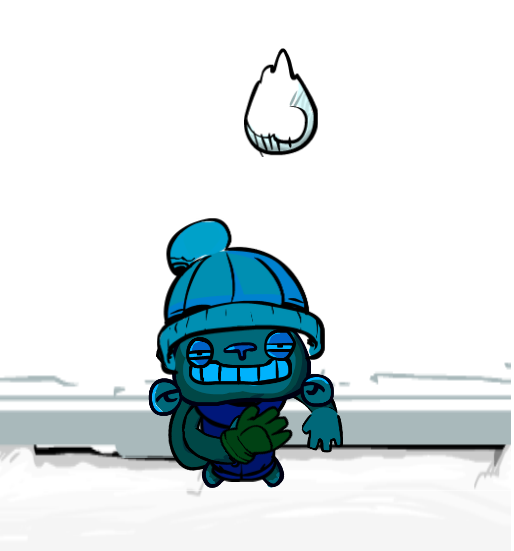

Capturas


Videojuego 2D de género Casual, para plataformas Android, dónde se procura salvar a nuestros despistados monos del frío ártico del Polo Norte. Se ha desarrollado de manera ágil con el motor Unity3D a lo largo de 2 semanas, como resultado de un trabajo para la asignatura Multimedia, obtenido una calificación de 94/100.
He llevado a cabo todos los apartados:
El videojuego se ha desarrollado en apenas 2 semanas, como resultado de un desarrollo ágil, procurando hacer hincapie en la jugabilidad del mismo y no en el acabado final y artwork. Se ha incorporado una mecánica simple de 'drag' o arrastre de los monos como únicos controles del juego, de forma que sea factible para el usuario jugar con una sóla mano, aderezado con un sistema de ranking local.

“Una panda de monos sacados de la jungla más salvaje del Sudeste Pacífico se embarcan sin quererlo
en una embarcación de mercancias intercontinentales, cegados por los contenedores repletos de bananas que albergaba el barco.
Semanas despues, desembarcan en un lugar inóspito...el Polo Sur!
¡Ayudáles a no congelarse! Recoge las prendas que los pingüinos han tomado prestado a los nativos.
Pero, ¡ten cuidado, los esquimales están muy cabreados!”
Nota: El videojuego aunque se encuentra en una versión estable y funcional, está orientado como trabajo de asignatura,
por lo que no se encuentra desarrollado al 100%.
Es por eso que está sujeto a futuros cambios y añadidos, así como de rediseño de todo el artwork.
Para probar la demo, puedes hacerlo desde este enlace, aunque recomiendo descargar la .apk para jugarlo en plataformas Android, que es para la plataforma en la se ideó la mecánica del juego.
Todo el código se encuentra en GitHub de manera pública, por lo que os invito a que le echeis un ojo al código fuente, a los recursos o al videojuego en general en este enlace.
Por último, puede visitar parte del artwork de este proyecto a través de Behance, en este enlace.